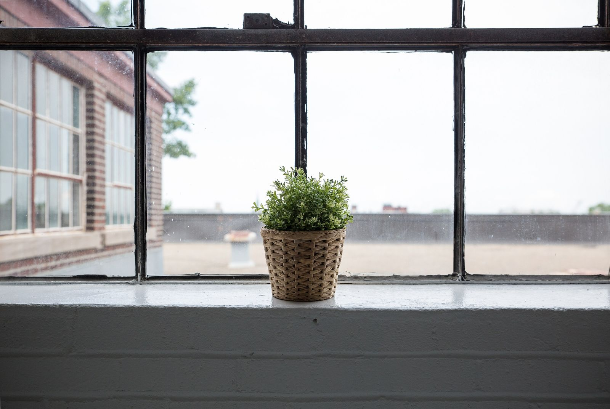

Hem/Om oss
Om oss
Gedigen kompetens, varmt bemötande
KBT-Konsulterna är en privat psykologmottagning i centrala Uppsala. Vi är legitimerade psykologer och psykoterapeuter, och specialister i kognitiv beteendeterapi.
Vilka är vi?
Vi levererar en gedigen kompetens förpackad i ett varmt och professionellt bemötande.
Vi är sju legitimerade psykologer. Flera av oss är dessutom legitimerade psykoterapeuter, specialister i klinisk psykologi eller neuropsykologi, och utbildade handledare. Vi har arbetat inom psykiatrin, BUP, primärvården, habiliteringen, beroendevården, skolan och behandlingshem — och undervisar eller har undervisat vid Uppsala universitet.
Vår mottagning ligger i Gårdshuset vid Slottskällan på Sjukhusvägen 3, tio minuter från Centralstationen. Vi tar emot här, och online i hela Sverige.
Vad är KBT?
Ett paraply, inte en mall.
KBT — kognitiv beteendeterapi — har ett mångårigt och gediget forskningsstöd och är i dag ett paraplybegrepp som samlar flera olika behandlingsformer. Vi använder framför allt dem som Socialstyrelsen rekommenderar och som har starkast forskningsstöd.
KBT betraktas i dag som en av de mest effektiva behandlingsformerna vid depression, ångest, sömnstörningar, problem i parrelationer och vid överdrivet användande av alkohol, droger, läkemedel och spel. Att metoderna är strukturerade betyder inte att behandlingen är det samma för alla — den utgår från dina mål och dina värderingar.
Beteendeterapi och kognitiv terapi
Grunderna i KBT — att förändra beteenden och att arbeta med tankar och tolkningar.
ACT
Acceptance and Commitment Therapy. Att göra plats för det svåra och samtidigt röra sig mot det som är viktigt.
Motiverande samtal (MI)
Ett samtalssätt för förändring. Angeli Holmstedt är MI-utbildare och medlem i MINT.
Mindfulnessbaserade program
MBSR, MBCT och MBRP. Socialstyrelsen rekommenderar mindfulnessbaserad behandling vid återkommande depressioner.
Återfallsprevention
Strukturerat arbete för att förebygga återfall vid missbruk och beroende.
IBCT
Integrative Behavioral Couple Therapy — KBT-baserad parterapi.
DBT
Dialektisk beteendeterapi vid emotionell instabilitet.
PE och schematerapi
Prolonged exposure vid trauma, och schematerapi vid mönster som går igen över tid.
Evidensbaserad praktik
Så arbetar vi.
Vi arbetar utifrån evidensbaserad praktik. Det innebär att man som professionell väger samman sin samlade erfarenhet och expertis med den bästa forskningsbaserade kunskap som finns tillgänglig — och med den enskildes situation, erfarenhet och önskemål.
Evidens kommer från vetenskapliga studier om insatsers effekter, och det krävs kunskap för att värdera dem. Att det finns forskning inom ett område betyder inte att resultatet går att lita på. Som utbildade psykologer och psykoterapeuter har vi en gedigen kompetens i att värdera forskning.
Socialstyrelsens nationella riktlinjer vägleder oss inom många av de problemområden vi arbetar med.
Onlinesamtal
När det inte passar att ses på plats.
Om du inte har möjlighet att komma till mottagningen erbjuder vi samtal online via dator eller mobiltelefon. Du kan ha hela din kontakt med oss på distans, eller bara vid de tillfällen du är bortrest eller sjuk.
För privatpersoner erbjuder vi bedömning, behandling, rådgivning och stöd online, i hela Sverige. För företag och offentlig verksamhet erbjuder vi handledning och andra insatser online.
Säkerhet: vi använder Kaddios system för säkra videosamtal, som uppfyller Socialstyrelsens krav på stark autentisering. Inloggning sker med BankID. Samma lagar om sekretess och patientsäkerhet gäller som vid besök på mottagningen.
Vem får ge behandling?
Legitimation är en skyddad titel.
Titlarna psykolog och psykoterapeut är skyddade i lag. En legitimerad psykolog har en femårig universitetsutbildning och ett års praktisk tjänstgöring bakom sig, och står under Socialstyrelsens tillsyn. En legitimerad psykoterapeut har därefter ytterligare en påbyggnadsutbildning.
Begrepp som ”terapeut”, ”samtalsterapeut” eller ”coach” är däremot inte skyddade — vem som helst får kalla sig det. Hos oss är alla legitimerade psykologer, och vi arbetar under tystnadsplikt och med patientförsäkring.
”Vi vill inte publicera omdömen eftersom vi arbetar under sekretess. Det bästa betyget för oss är alla som kontaktar oss för att de blivit rekommenderade av vänner, anhöriga eller andra vårdinrättningar.” Ur våra vanliga frågor

Ta första steget när du är klar för det.
Skriv eller ring. Vi hör av oss så snart vi kan, och du behöver inte veta på förhand vad du vill ha hjälp med.
Legitimation och medlemskap